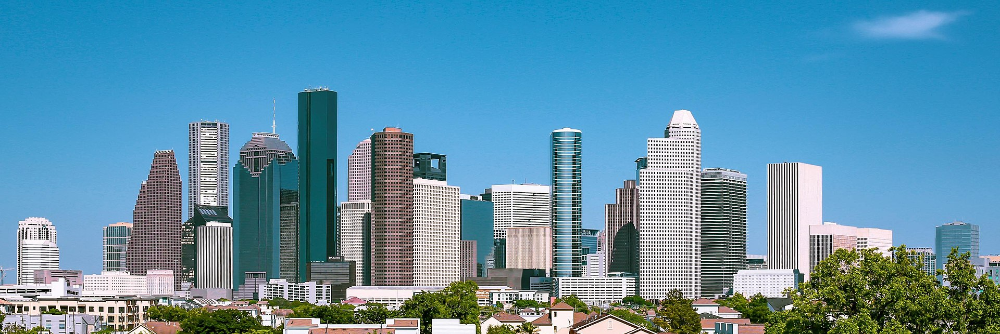
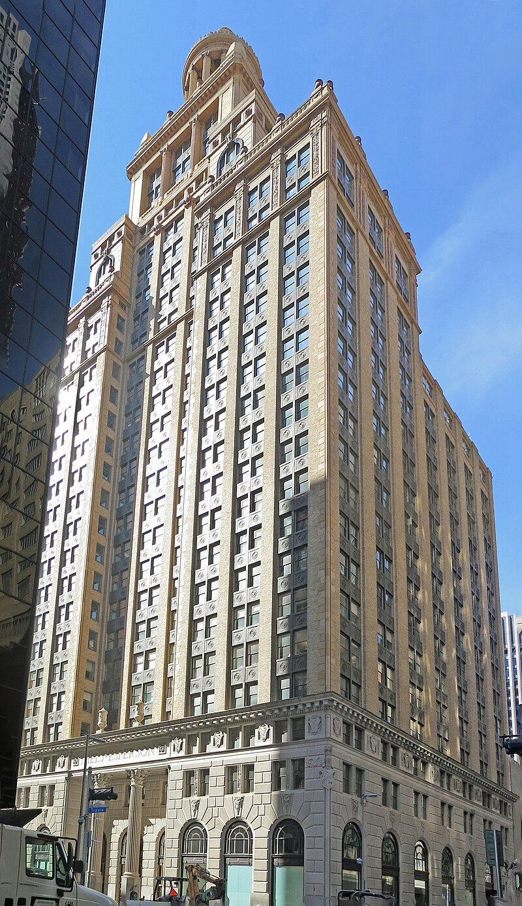

Facts about Houston
- Population: 2,314,157
- Year Incorporated: 1837
- Region: Southeast Texas
- Classification: Urban/Metro
- Average income level of the city compared to Texas: Lower
- Rank: 4th

Geography
| Geology |
Cityscape |
Architecure |
| Lake Houston |
Downton Houston |
The Niels Esperson Building |
| Lake Conroe |
Uptown Houston |
The JPMorgan Chase Tower |
| Lake Livingston |
Texas Medical Center |
The Williams Tower |